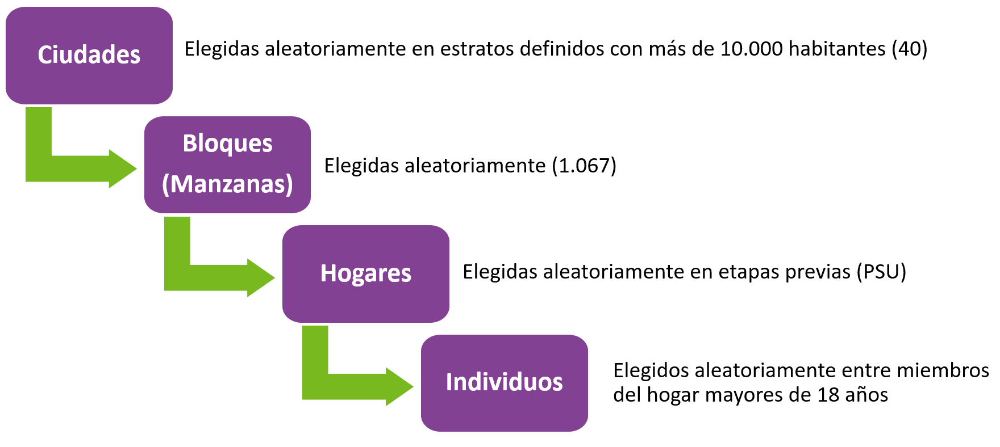

Anexos
Anexo 1. Aspectos técnicos del estudio
Acceso a las Bases de Datos ELSOC
Las bases de datos y documentación correspondientes se encuentran disponibles, de manera libre y gratuita, en un repositorio de datos, al cual se podrá acceder en el link:
https://dataverse.harvard.edu/dataverse/elsoc
En este sitio se obtendrá acceso a los datos de las 6 mediciones transversales de ELSOC, así como bases longitudinales que integran las distintas mediciones. En colaboración con el Centro de Inteligencia Territorial (CIT), se pone también a disposición las bases ELSOC-CIT. Estas bases de datos permiten combinar la información de ELSOC, y estimaciones e indicadores territoriales y geoespaciales de distinta índole, proveniente de diversas fuentes de información nacional para los períodos 2016 a 2019.
ELSOC tiene un compromiso con los más altos estándares científicos en términos de producción y análisis de datos. Dentro de esta visión global, ELSOC se guía por las principales pautas de Transparencia y Apertura en la investigación científica. Por esta misma razón, los códigos utilizados para el desarrollo de este documento se encontrarán disponibles en https://github.com/elsoc-coes/rcs_v1.
Características del diseño muestral
- Unidad de Análisis: Individuos
- Muestra objetivo: 3.000 individuos en muestra original (a partir de 2016) y 1.500 en muestra refresco (a partir de 2018)
- Población Objetivo: Hombres y mujeres de 18 a 75 años, residentes habituales de viviendas particulares ocupadas en zonas urbanas, localizadas en 40 ciudades (92 comunas, 13 regiones) del país
- Periodicidad: Anual.
- Diseño Muestral: Probabilístico, estratificado (por tamaño de ciudades), por conglomerados y multietápico
- Marco Muestral: Marco de muestreo de manzanas del pre-censo 2011
- Unidades de Muestreo: Primero se eligen ciudades (UPM), luego manzanas (USM), y sub-bloques y viviendas (UTM). La unidad final de selección es la persona
- Asesores del estudio: Consultora Stephanie Eckman y Centro de Inteligencia Territorial (CIT) de la Universidad Adolfo Ibáñez
Figura 4.1: Mediciones de ELSOC

Figura 4.2: Muestreo de ELSOC
Características del levantamiento de datos
- Formato de aplicación: Cuestionario estructurado. Levantamiento en formato CAPI (Encuesta presencial con asistencia de tablet). Durante 2021, de manera excepcional, se cambió a formato CATI (Encuesta telefónica con asistencia de tablet), debido a contingencia COVID-19. Durante 2022, se cambió a formato Mix-Mode, que mezcla formato CAPI y CATI.
- Período de Aplicación: entre Julio y Noviembre de cada año. Debido al estallido social, la cuarta medición se aplicó entre el 21 de noviembre de 2019 y el 9 de marzo de 2020. Debido a la pandemia, la quinta medición se aplicó entre el 29 de enero de 2021 y 12 de julio de 2021. La sexta medición se aplicó entre Julio y Octubre de 2022.
- Instrumento: Cuestionario compuesto por preguntas cerradas de carácter simple y múltiple junto a algunas preguntas abiertas. Combina módulos de preguntas permanentes (medidas en todas las olas) y otras intercaladas entre olas.
- Cobertura Temática: Contiene siete módulos temáticos: Territorio, Redes y actitudes sociales, Ciudadanía y democracia, Desigualdad y legitimidad, Conflicto social, Salud y bienestar y Caracterización sociodemográfica.
- Incentivos a la participación: Entrega de incentivos monetarios para el encuestado ($9.000 CLP durante 2022) y de material sobre el estudio (ELSOC y COES). Acciones de seguimiento basadas en la información de contacto (correo electrónico para cumpleaños y días festivos).
- Entrenamiento de entrevistadores: Contratación de entrevistadores con experiencia en encuestas complejas y/o longitudinales. Capacitación centralizada y presencial para coordinadores de campo y un subconjunto de entrevistadores en Santiago (incluidos ejercicios prácticos para la implementación del cuestionario, uso de tabletas y protocolo de contacto). Actividades adicionales en otras regiones de Chile. Diseño de un Manual de entrevistador especializado para el proyecto.
- Operaciones de Control y Supervisión: Coordinadores de campo supervisan el trabajo de entrevistadores, verificando el número de visitas, el contacto, la identidad del participante y preguntas claves. El Organismo ejecutor realiza una supervisión interna de al menos el 10% de la muestra (entrevistando nuevamente a algunos encuestados), verificando la duración y la respuesta de los participantes.
- Organismo Ejecutor: Levantamiento a cargo del Centro Micro Datos (CMD) de la Universidad de Chile.
Atrición de la muestra
El diseño de ELSOC contempló entrevistar a 3.000 personas en su muestra original y 1.500 en la muestra refresco. Sin embargo, es habitual que en encuestas panel se reduce el número de participantes, dado que algunos optan voluntariamente por dejar de participar y otras personas no pueden ser recontactadas. Este fenómeno es conocido como atrición, y puede afectar la interpretación de ciertos resultados longitudinales. En el caso de ELSOC, la tasa de atrición es comparativamente baja con relación a otros estudios similares, por lo que no se considera al momento un problema significativo. A pesar de esto, el año 2018 se introduce una muestra refresco para contrarrestar el efecto de la atrición.
El año 2022, la atrición presenta una baja importante, probablemente debido a que ya no existe la dificultad que implicaba el levantamiento durante la pandemia de COVID-19 y su cambio de modalidad.